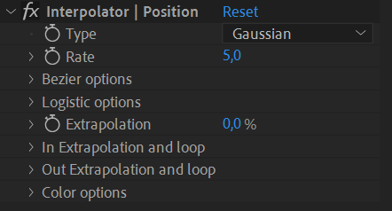
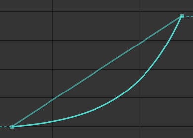
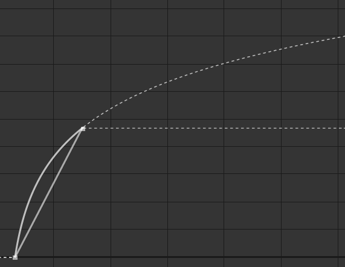
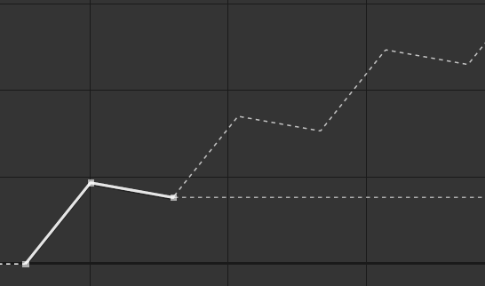
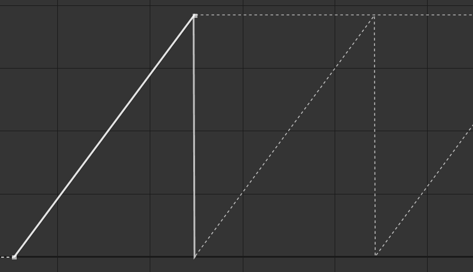
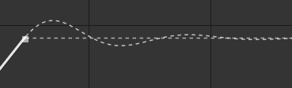

Interpolator
Interpolator
This video is part of the official comprehensive video course about Duik Ángela

The Interpolator help you interpolate* (and extrapolate*) your keyframe values with handy methods other than the usual Bézier and linear functions, or loopIn() and loopOut() expressions.

Notepad with a drawing of an unknown woman, perhaps Johann Gauss born Osthoff,
Carl Friedrich Gauß, 1804
Public domain.
In After Effects, like in almost all animation software, interpolation between keyframes is either linear or using a Bézier function. Although using a Bézier function to interpolate keyframes is very powerful, it can take a lot of time to precisely adjust, as between two keyframes there are four parameters to set (two coordinates per Bézier control point, a.k.a. tangent).
Duik can help you with the process, either by controlling the Bézier interpolation with less parameters and some automation, or by introducing completely different interpolation functions*.
- Select some properties
- Click the Interpolator button.
Duik adds an effect on the layer to let you easily control the interpolation on the properties.
Tip
When you’ve applied the Interpolator on some properties and then want to use the same Interpolator on other properties, you can just copy and paste the expression in the new properties.
Effect

You first have to choose the interpolation type to use on the property.
Duik proposes these types (read the details below):
- None (use keyframes)
- Linear
- Bézier
- Gaussian
- Logistic (sigmoid)
- Logarithmic
- Exponential
Except None and Linear, all these functions can be quickly adjusted with the Rate value.
Tip
Both the interpolation type and the rate properties can be animated; this way you can easily use multiple interpolation methods on the same property at different times!
The Interpolator can also be used to extrapolate the keyframes, i.e. to continue the animation after the last keyframe (e.g. loop or follow through), or before the first one. It is even able to detect some fixed parts in the animation in between the keyframes to extrapolate some movement in these parts.
Interpolation
None (use keyframes)
With this mode, Duik will not interpolate between the keyframes but let After Effects do the interpolation as you wish, using standard After Effects Bézier or linear methods. This is useful if you’d like to use the Interpolator only for its extrapolation (loop and follow through) capabilities.
Linear
This is a very simple linear interpolation, similar to the default After Effects keyframes.

Linear interpolation.
Bézier
With this mode, you can use a standard Bézier function to interpolate, but control the parameters more easily.

Bézier interpolation.
Duik uses carefully chosen default values for the actual Bézier parameters, and lets you quickly adjust the easing using only the Rate property of the Interpolator effect.
But you can also manually adjust everything in the Bézier options section of the effect.

To make it quick and easy to control both Bézier control points (tangents) at once, you can use the IN/Out ratio. With this value, both tangents are horizontal (the After Effects easing speed in 0), and you control the ratio between the length of the two tangents (the After Effects easing influence).
At 50 %, both tangents have the same length, at 0 % the out influence is 0 % and at 100 % it’s the opposite.
With this ratio set, you can then control the actual length of both tangents at once with the Rate property of the Interpolator effect, which makes it quick and easy to adjust the Bézier interpolation of all the keyframes at once. Don’t forget all these values can be animated!
If you need to set the equivalent of the After Effects easing speed (i.e. the angle of the tangents) or control manually and precisely all the values, check the Use Advanced options box and set the values in the Advanced section.
Gaussian
Using a gaussian function to interpolate the keyframes helps creating very natural and smooth movements with a single parameter, set with the Rate property of the Interpolator effect.

Gaussian interpolation.
This function is also called a bell function because of the shape it generates. The resulting motion feels very natural, especially for characters, animals, to show their will: although the movement is very smooth, the acceleration is a bit faster than the deceleration, which perfectly mimics the actual acceleration and deceleration of voluntary movements.
This acceleration and deceleration can easily be adjusted with the Rate property.
Note
The interpolation generated by this gaussian function can’t actually be generated by a standard Bézier function (without adding intermediary keyframes); the deceleration can be much smoother, and the motion feels much more dynamic.
Logistic (Sigmoid)
To the contrary of the gaussian function, the interpolation using the logistic function is perfectly symmetrical, with the same acceleration and deceleration (thus its other name, Sigmoid).
This may be useful for more mechanical movements.

Logistic interpolation.
To the contrary of the Duik Bézier interpolation, with the logistic function, what’s controlled with the Rate property is the actual speed of the movement. That means the interpolation may not complete if there’s not enough time between the keyframes or if the rate is too small (when the speed is not high enough to finish and stop the movement given the time between the keyframes).
Note
The movement never actually stop using this function, but given enough time to slow down it’s slow enough to seem to stop.
The fact that the speed may not be 0 on the keyframe may actually be very useful when using extrapolations, especially the continue or follow through modes.

Logistic interpolation with the extrapolation set on continue.
In the example above, the interpolation is set to Logistic (sigmoid) and both the In and Out extrapolations are set to Continue. This creates a movement which never stops. That would be very difficult to set with a standard Bézier function.
This interpolation works nice with the follow through extrapolation too.

Logistic interpolation with the extrapolation set on follow through.
Logarithmic or Exponential
Logarithmic and Exponential are always decelerating and always accelerating functions respectively.

Logarithmic interpolation.

Exponential interpolation.
They’re very useful to animate apparitions or disappearances, objects coming in or getting out of the frame.
Similarly to the logistic (sigmoid) function, what makes them interesting is that the generated movement never really stops, and this is especially difficult to setup precisely using standard Bézier functions.
The generated motion is also very smooth.

Logarithmic interpolation, with the extrapolation set on continue.
You can use the Rate property to adjust the acceleration or deceleration rate.
Extrapolation
The Interpolator can also extrapolate the movement, continue it after the keyframes, or before them.

First, the Extrapolation to property to 100 % (or any value other than 0 %) to enable it.
Tip
The Extrapolation property can be animated to enable, disable or adjust the extrapolation at any time.
The In extrapolation section contains the options for the extrapolation before the keyframes, the Out extrapolation section for the extrapolation after the keyframes.
There are several types of extrapolation:
- Constant: values are not extrapolated, the value of the last keyframe is used.
- Continue: the motion continues smoothly after the last keyframe, depending on the interpolation set before the keyframe.

Continue extrapolation after a linear interpolation.
Continue extrapolation before and after a logistic interpolation. - Offset: the motion is repeated, the values being added to the last known value.

Offset extrapolation. - Cycle: the motion is repeated.

Cycle extrapolation. - Pingpong: the motion is repeated, reversed every other cycle.

Pingpong extrapolation. - Follow through: a follow through* animation is generated (Out extrapolation only).

Follow through extrapolation. - Bounce: a bouncing animation is generated (Out extrapolation only).

Bounce extrapolation.
By default, the Interpolator extrapolates before or after the existing keyframes. You can also extrapolate during still parts of the animation, between keyframes. That’s very useful for example to add some follow through animation every time the animation stops, even if there are other keyframes later in the timeline.
You can choose the number of keyframes to be used to extrapolate the motion (for the Offset, Cycle, and Pingpong modes only). If this is set to 0, the Interpolator will use all available keyframes.
The damping value controls the time it takes for the motion to come to a full stop (and get back to the last keyframe value). This value is especially useful with the follow through or bounce mode, but can be used to dampen the other modes too, and progressively stop a loop.
With the Out extrapolation set to follow through or bounce, you can also control the elasticity of the extrapolation, which will change the amplitude and frequency of the extrapolation. You could also use the Extrapolation property with values different than 100 % to control the amplitude.
Color Options
When interpolating colors, changing the colorspace may help generating better colors between the keyframes.
With After Effects by default, colors are interpolated in an RGB colorspace, and this often generates desaturated colors in between; changing this colorspace may help improve the interpolation by generating more vivid colors in between.
- RGB: the default interpolation, where the Red, Green and Blue channels are interpolated separately.
- HSL: the color is converted to Hue, Saturation and Luminosity channels before being interpolated and converted back to RGB. This allows for better and more vivid colors in between, but if the colors are too far away from each other in the Hue channel, this may cause the interpolation to go through all the hues of the rainbow.
- Shortest-path HSL: this is similar to HSL but making sure the Hue channel is always interpolated through the shortest path possible, making sure the number of different hues during the interpolation is as small as possible.
- Longest-path HSL: this is similar to Shortest-path HSL but taking the longest path with the greatest number of hues as possible.
- Combined RGB SL: this mode interpolates the Saturation and Luminosity separately, and uses an RGB interpolation to generate the interpolated Hue, then converts back everything to RGB. The result is slightly different from the Shortest-path HSL and depending on the colors to be interpolated may be a bit better or feel more dynamic.
The result depends a lot on the colors to be interpolated and how different they are. The best is to try all the different modes to see which fits better to your needs.